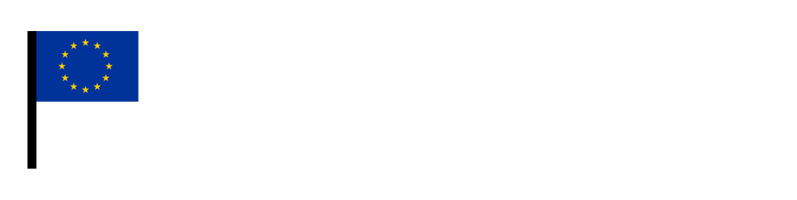

Qu'est-ce que le {{ site.data.identity.name }} ?
C'est un label qui récompense les communes pour leur engagement européen, en les incitant à mettre en place des actions symboliques et pratiques pour leurs citoyens.
Il comprend cinq niveaux qui permettent aux citoyens de voir en un coup d'oeil les réalisations européennes dans leur commune et reflètent l'engagement européen d'une municipalité.
